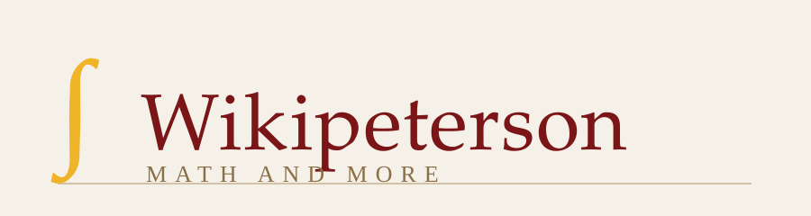
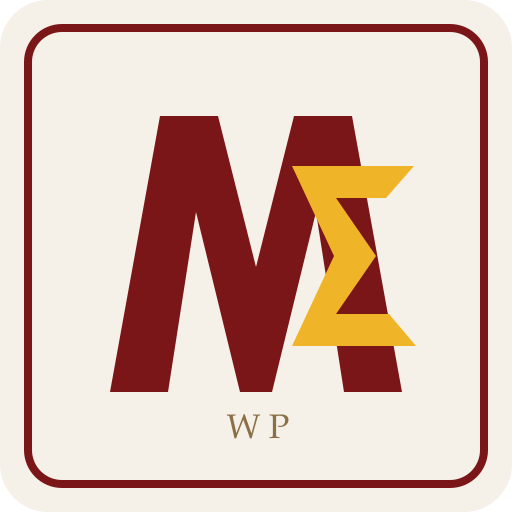
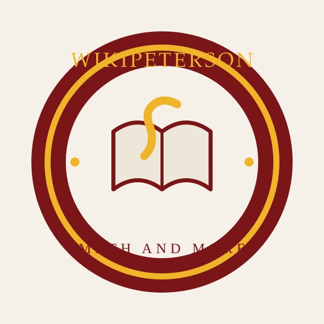

Three directions that fit the current site style: a classic wordmark, a compact monogram, and an academic seal. Open the SVGs directly too if you want to inspect them one by one.
Best if you want the site to feel like a polished publication or school imprint. Strong for headers and page branding.

A tighter symbol that works well for a favicon, profile icon, or badge while still feeling math-oriented.

Most distinctive and old-school. Great if you want the site to feel like an institution rather than just a page header.
